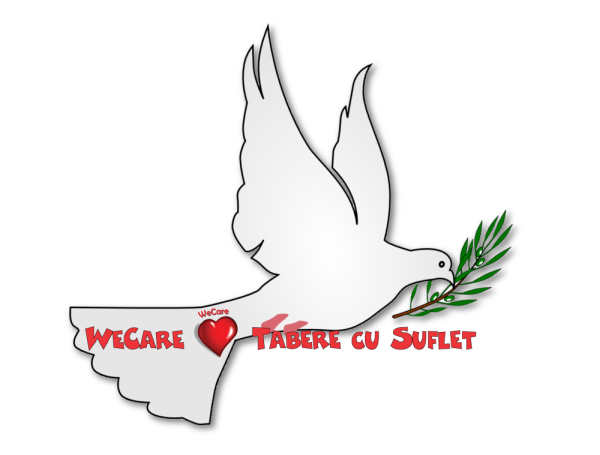

/ Proiecte WeCare / Punti de Lumina / Mesaj de Pace
/ Proiecte WeCare / Punti de Lumina / Mesaj de Pace

Prin programul WeCare Punti de Lumina, odata cu invadarea Ucrainei si cu izbucnirea razboiului la granita noastra, am creat un nou proiect pentru sprijinirea refugiatilor sositi din tara vecina. Mai multe detalii
Intr-o seara rece de la inceputul Primaverii, un mare imparat care domnea peste jumatate de lume s-a hotarat sa isi mareasca si mai mult imparatia, asa ca a hotarat sa trimita tancurile si rachetele ca sa cucereasca o tara vecina! Ostenii din aceasta tara au luptat cu indarjire si au tinut piept imparatului, insa Ingerul Mortii si-a facut aparitia iar flacara razboiului s-a raspandit cu repeziciune arzand in cale Bucuria, Pacea si Statornicia! Oamenii, mame cu copii in brate, si-au luat agoniseala si s-au grabit sa plece in regatele vecine, luand calea pribegiei ... Si asa a inceput razboiul la frontierele noastre!
Ce ne propunem sa facem?
- Un Mesaj de Pace
In tara invadata de marele imparat traia un calugar batran, care se ruga in pace cat e ziua de lunga. Intr-o zi, pe langa chilia sa sapata in piatra, pe malul unui rau, a trecut un copil fugind. "De ce fugi, copile?" l-a intrebat calugarul. Copilul s-a oprit o clipa din alergat. "Fug de tancuri" a strigat el, tragandu-si sufletul. "Si incotro fugi?" a intrebat calugarul. "Undeva unde este pace!" a raspuns copilul. "Atunci nu trebuie sa mai fugi nicaieri, căci ai ajuns la locul pe care il cauti" i-a raspuns calugarul. "Pai si tancurile?" a intrebat copilul. "Aici nu au cum sa vina, căci ne rugam si avem inimile pline de pace, iar Ingerul Pacii nu le lasa sa vina" i-a raspuns calugarul. "Iar daca o sa ne rugam si mai mult, preaplinul din inimile noastre se va revarsa in lume si va ajunge si la regii si la imparatii care conduc destinele popoarelor. Căci razboaiele sunt in primul rand in ininimile noastre si apoi in mintile conducatorilor!"
Asadar, urmand sfatul batranului calugarului, ne propunem sa cream o Punte de Lumina care sa ne umple inimile de pace si de iubire, astfel incat preaplinul lor sa se reverse in toata Lumea! Mai multe detalii - Desene de Copii
Marele imparat avea o ureche mare, pe care o folosea sa asculte ce vorbesc supusii si sa vada ce fac acestia. Obisnuia sa o lase sa se plimbe libera prin targuri si prin orase, iar daca vedea sau auzea pe cineva care cracnea si doar o vorba scapa de rau despre cuceririle sale, indata il baga in temnita cea neagra! Intr-o zi, cum se plimba prin piata cea mare, a zarit un copil desenand cu creta, pe caldaram, un soare. Apropiindu-se, a vazut cu uimire cum soarele prinde viata si incepe sa cante un cantec de pace si sa ii strige: "Opreste-te, cei pe care-i omori sunt fratii tai!" Mirat si suparat in acelasi timp, a strigat garzilor sale sa il aresteze pe copil!
Nu stim cat de adevarata este povestea, căci am auzit-o si noi de la un spiridus, dar ne-a placut si vrem sa o continuam, dand viata desenelor. Cine vrea sa ne de o mana de ajutor, poate sa faca un desen oricat de mic, sau de mare, alb-negru sau in culori, care sa transmita un mesaj de pace! Desene vor fi incarcate pe pagina programului, iar cele mai bune vor fi premiate:) Mai multe detalii - Ajutor pentru refugiati
Conform Legii Pendulului, razboiul a creat si multa empatie in sufletele oamenilor, de aceea multa lume a sarit din toata inima sa ajute! Am vazut valuri si valuri de persoane care au plecat spre granita pentru a oferi refugiatilor ceai, paturi, transport, cazare si ce mai e nevoie, alaturi de un zambet cald.
Este in natura noastra sa sprijinim pe cei aflati in nevoie, de aceea vom incerca sa ne oferim ajutorul dedicat, acolo unde este nevoie. Mai multe detalii - Gratuitate si reduceri pt copii
In afara de lispurile cu care se confrunta, refugiatii traiesc o adevarata trauma, iar cei mai afectati sunt copiii! Am vazut pe internet psihologi care ne sfatuiau ce sa spunem copiilor, ca au plecat cu mama intr-o scurta vacanta, ca tatal nu a putut sa vina, ca a ramas acasa insa "vine si el repede, dupa ce ne jucam putin"! Adevarul este ca pentru copiii care au petrecut zile intregi in guri de metrou si adaposturi, trecerea frontierei si intrarea in alta tara pare o vacanta. Insa ce efecte va avea adevarul ascuns acum, "pentru a proteja copilul", asupra psihicului viitorului adult, ce monstri va naste si cu ce eforturi vor fi asanati, nimeni nu spune. Practic, psihologii de astazi nu fac decat sa paseze problema peste ani. Pentru a nu ajunge aici si a facilita o dezvoltare normala a copiilor, este necesara crearea unei stabilitati emotionale si revenirea cat mai rapida la starea de normalitate.
De aceea, prin programul Punti de Lumina ne propunem sa ajutam copiii afectati de razboi, oferindu-le gratuitate sau reduceri la toate activitatile Asociatiei. Pentru a facilita integrarea lor in grup, in taberele si activitatile la care vor participa vor fi instructori vorbitori de limba lor nativa. Mai multe detalii - Alte idei
Daca mai aveti si alte idei, va rugam sa ne spuneti! Ne dorim sa ajutam si suntem deschisi la orice sugestie!